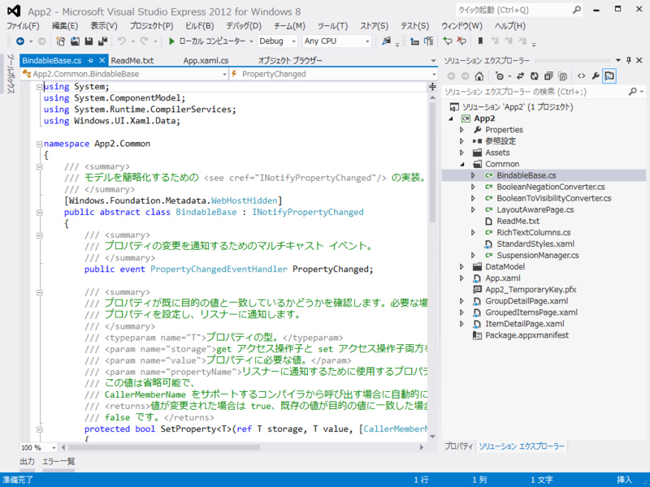
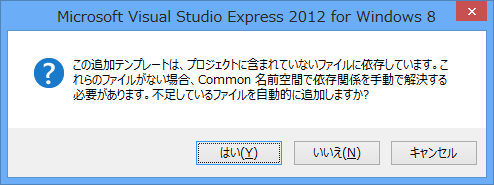
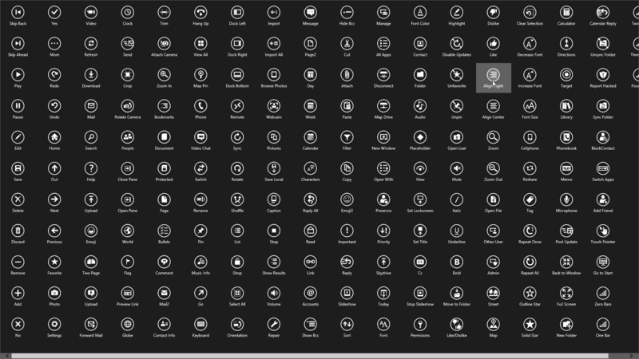

Common フォルダをチラ見してみる
公開日：

Windows ストアアプリ*1を作り始めたひとは、かならず一度は Common フォルダをジックリみたほうがいいと思う。わしはめんどいのでチラ見した。
LayoutAwarePage クラス
使用するテンプレート ページはすべて LayoutAwarePage クラスから派生しており、新しいアプリの MainPage.xaml に使う空白のページよりもずっと多くの既定の操作があります。LayoutAwarePage は、Metro スタイル アプリ開発の重要な機能を実現する Page を実装したものです。
- ［ViewState］アプリケーション ビュー状態を表示状態にマッピングすることで、ページをさまざまな解像度、向き、ビューに対応させることができます。
- ［Navigation］GoBack イベント ハンドラーと GoHome イベント ハンドラーは基本的なナビゲーションをサポートします。
- ［ViewModel］既定のビュー モデルは、単純でバインド可能なデータ ソースを提供しています。
- ［SaveState/LoadState］SaveState と LoadState メソッドは、アプリのセッション状態を管理するために SuspensionManager クラスで利用します。
また、ページ テンプレートでは、Metro スタイル アプリの設計ガイドラインに準拠した StandardStyles.xaml に記述されているスタイルとテンプレートを使います。冒頭部でこれらのスタイルのいくつかを使い、そのコピーを変更してアプリの外観をカスタマイズします。
よくわからんけど、そういうものらしい。ただ、ViewModel はタダのディクショナリで、 MVC なんかで使われる ViewModel に近い感じで、単なる初期データを表示するビューワーとしてならともかく、それ以上のことをするには何か工夫がいるのかもしれない。
あと、LayoutAwarePage クラスの定義は、テンプレートによって入っていないこともある。たとえば、空のプロジェクトから始めてあとからテンプレートページを追加した場合、ビルド時に「LayoutAwarePage がない」と言われる（後述の BindableBase もそうだと思う）。そんなときはリッチなプロジェクトを一度作って、そこからコピーしてくればいいみたいだね。
追記 （2012/09/18 0:42）

勝手に追加してくれるっぽい。テキトーにダイアログを読み飛ばしていたわしが悪い。
BindableBase クラス
INotifyPropertyChanged の .NET Framework 4.5 的実装。CallerMemberName っていうのが新たに追加された属性で、呼び出し元を参照して勝手に名前をいれてくれるみたい。propertyName を文字列で渡そうとしてミスタイプで自爆する……なんてことが減るかも。
[Windows.Foundation.Metadata.WebHostHidden] public abstract class BindableBase : INotifyPropertyChanged { public event PropertyChangedEventHandler PropertyChanged;protected bool SetProperty<T>(ref T storage, T value, [CallerMemberName] String propertyName = null) { if (object.Equals(storage, value)) return false;
storage = value; this.OnPropertyChanged(propertyName); return true; }
protected void OnPropertyChanged([CallerMemberName] string propertyName = null) { var eventHandler = this.PropertyChanged; if (eventHandler != null) { eventHandler(this, new PropertyChangedEventArgs(propertyName)); } } }
あと、バインディングに便利っぽいコンバーターとか、リッチエディット関連っぽいクラスがいくつか用意されている。
StandardStyles.xaml

既定のスタイルがいっぱい定義されている！（これはボタンスタイルの例）
Metro、じゃねぇ、Windows ストアアプリでは、Metro、もとい、Windows ストアアプリっぽさ、デザインの統一性というのが結構重要になる。なので、なるべく既定のスタイルを使うか、既定のスタイルをベースに拡張するのが望ましいんじゃないかな。
<Button Style="{StaticResource OneBarAppBarButtonStyle}" />
なお、一部スタイルは初期状態でコメントアウトされているので、使うときは解除しなきゃいけないですよ。
*1:はぁ……もっといい呼び方はなかったんかいな！